Susanna
Rüssing
Anima creativa che fonde movimento e design
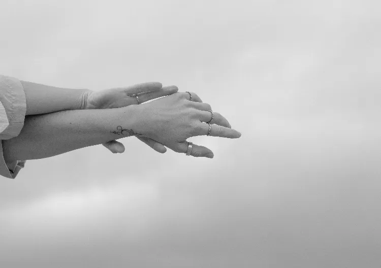
About me
Designer in formazione e ballerina professionista,
mi muovo tra creatività visiva e sensibilità artistica,
dove gesto e spazio si incontrano come linee
su una pagina.
L'arte è il filo rosso che unisce tutto ciò che amo, guidandomi nel creare, osservare e dare significato alle cose.
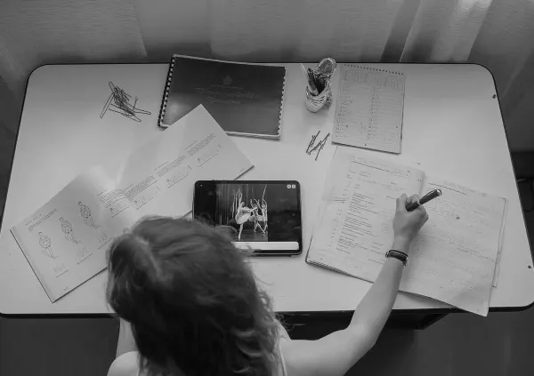
Design University
Secondo anno - Corso di Laurea in Design
Università degli studi San Marino 2025
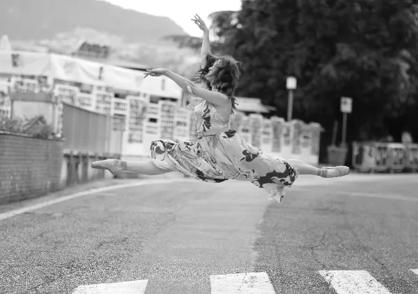
Dance career
Duplice diploma: Royal Academy of Dance 2019
Bottaini International Center of Arts 2021
Corso di formazione professionale 2024
Projects
Esplorazioni visive - spazio e movimento
Progetti universitari
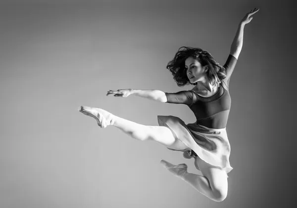
Shooting fotografico per l'Accademia di danza, Germania.
"Crisalide"
Workshop con Reinhard Plank sulla lavorazione dei copricapo in feltro.
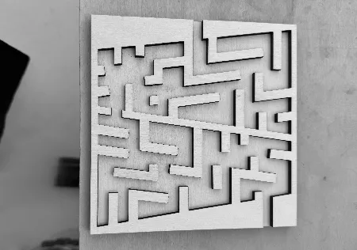
Labirinto
Progettazione di un labirinto, realizzato con taglio laser su legno.
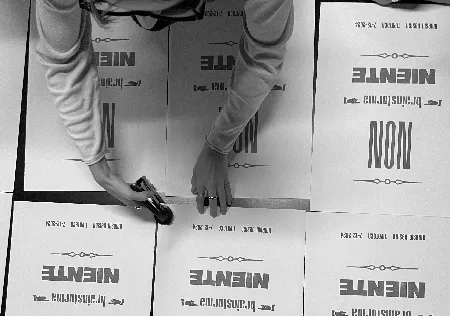
Tipoteca
Workshop sulla tipografia, tramite la scelta e l’utilizzo di caratteri mobili.
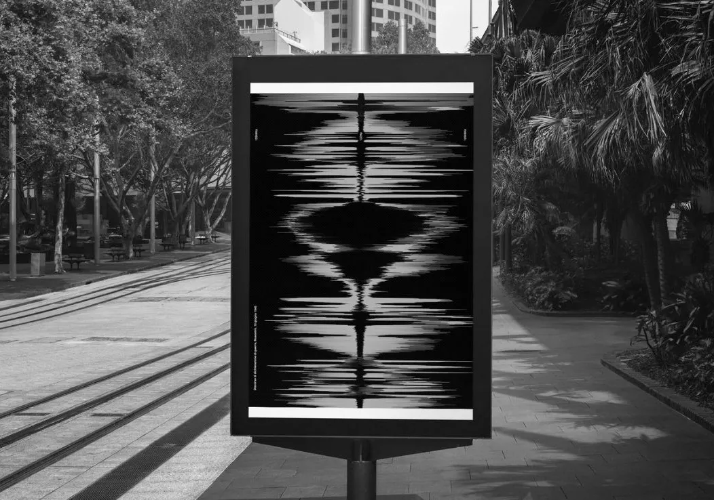
"Onde di espansione"
Le frequenze di un discorso di guerra, che diventano retorica dell’espansione del territorio.
"D.Rim"
Progetto di laboratorio di comunicazione, per creare l'identità visiva di un hub culturale
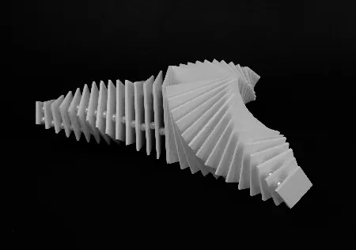
"Eco"
Modellino di trasformazioni geometriche, creato con forex e perle.
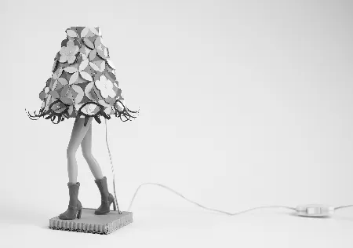
"Barbie Paralume"
Realizzazione di una lampada ispirata agli anni '60, con materiali di recupero.
"In collisione"
Indagine sul territorio come spazio caotico in movimento, raccontato attraverso la riproduzione analogica dei pianeti.
Esperienze
Ho 23 anni e sono una ballerina professionista,
diplomata con il metodo RAD e successivamente
presso un'Accademia di danza in Germania,
dove ho vissuto per due anni. Dopo il mio percorso
accademico, ho proseguito la mia formazione
con un corso professionale di danza
contemporanea, ampliando la mia ricerca sul
movimento e sull'espressione corporea.
Attualmente frequento il secondo anno del Corso di
Laurea in Design all'Università di San Marino, un
ambito che mi permette di coniugare creatività,
metodo e visione progettuale, dando vita a lavori
sempre diversi e in continua evoluzione.
Accanto alla danza e al design, coltivo una profonda
passione per la fotografia, sia come soggetto che
come osservatrice.
Oggi continuo a esplorare il linguaggio del corpo
anche come insegnante di danza classica
e contemporanea, unendo esperienza, sensibilità
e desiderio di trasmettere ciò che ho imparato,
anche attraverso il design.
Formazione
- Attitude Centro Danza San Marino, RAD graduated in 2019
- Liceo linguistico Giulio Cesare M. Valgimigli, graduated in 2022
- Bavaria Ballet Academy (BBA), graduated in 2021
- Agora Coaching Project, 2024
- Università degli studi di San Marino, Facoltà di Design
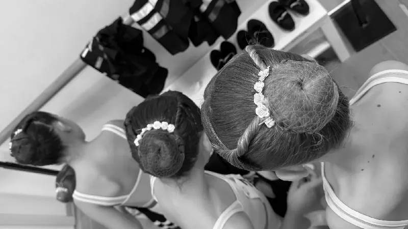
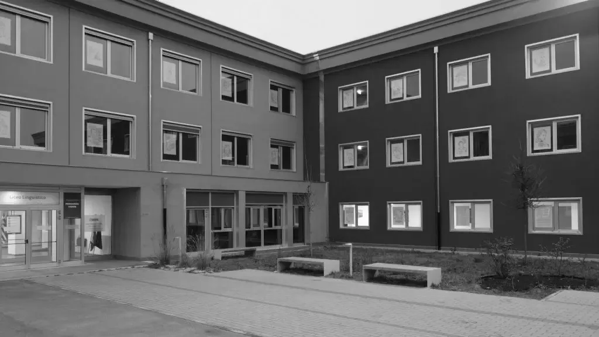
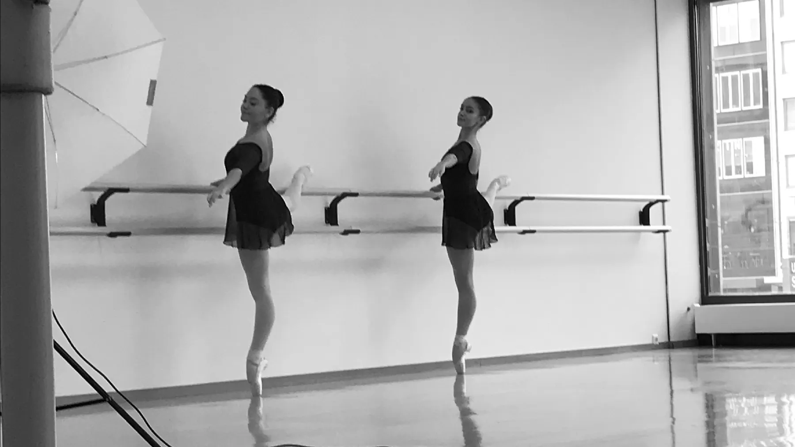
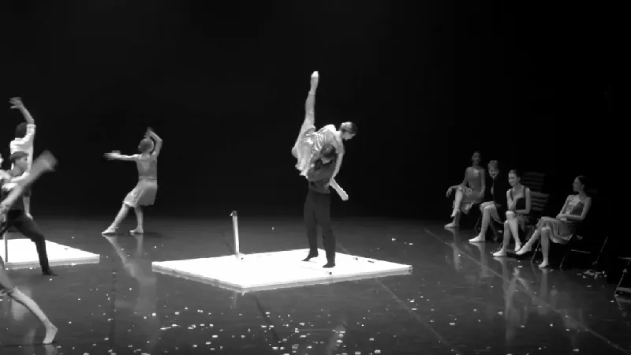
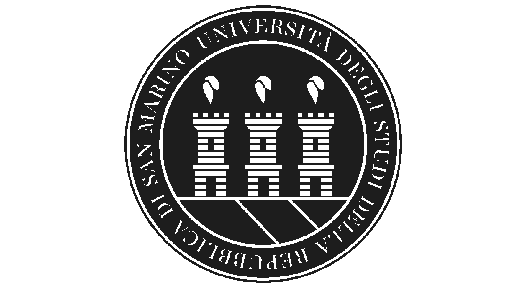